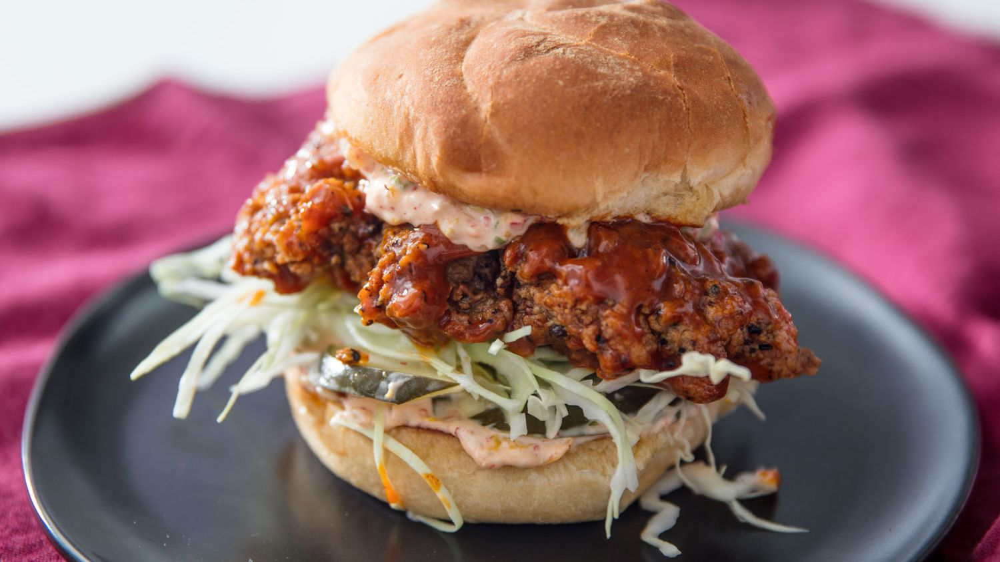

Kimchi-Brined Fried Chicken Sandwich Recipe
The Description
A kimchi-and-buttermilk brine tenderizes and seasons chicken thighs, which are then fried until they're super crisp and stacked on a tender toasted bun or a flaky and buttery homemade biscuit.
Ingredients
- 100ml (1/2 cup) kimchi juice, drained from 1 jar of kimchi
- 225ml (1 cup) buttermilk
- 1 egg
- 3 medium cloves garlic, smashed
- 6g (1 1/2 teaspoons) kosher salt
- 15ml (1 tablespoon) soy sauce
- 35g (about 1/4 cup) gochugaru (Korean red chili flakes)
- 15g (about 2 tablespoons) coarsely ground black pepper
- 6 boneless, skinless chicken thighs (4 to 6 ounces each)
- 1 cup drained kimchi, roughly chopped
- 150g (about 2/3 cup) mayonnaise
- 125ml (1/2 cup) vegetable or canola oil
- 2 medium cloves garlic, smashed
- 35g (about 1/4 cup) gochugaru
- 15g (about 2 tablespoons) coarsely ground black pepper
- 25g (about 2 tablespoons) gochujang (Korean chili paste)
- 12g (about 1 tablespoon) honey
- 10g (about 2 teaspoons) apple cider vinegar
- 10g (about 2 teaspoons) soy sauce
- Water, as needed
- 15g (about 2 tablespoons) gochugaru
- 5g (about 2 teaspoons) coarsely ground black pepper
- 12g (about 1 tablespoon) sugar
- 15g (about 2 tablespoons) black sesame seeds
- 10g (about 2 teaspoons) kosher salt
- 225g (about 1 1/2 cups) all-purpose flour
- 75g (about 1/2 cup) cornstarch
- 8g (about 2 teaspoons) baking powder
- 35g (about 1/4 cup) gochugaru
- 7g (about 1 tablespoon) coarsely ground black pepper
- 35g (about 1/4 cup) black sesame seeds
- 15g (about 2 tablespoons) garlic powder
- 6g (about 1 1/2 teaspoons) kosher salt
- 2L (2 quarts) peanut oil
- 6 soft buns, such as potato rolls, toasted in butter, or 6 black sesame biscuits
- Finely shredded cabbage
- Sliced dill pickles
For the Brine:
For the Kimchi Mayonnaise:
For the Sauce:
For the Spice Mixture:
For the Dredge:
To Cook and Serve:
The Directions
- For the Brine: Combine kimchi juice, buttermilk, egg, garlic, salt, soy sauce, gochugaru,
and black pepper in a large bowl. Add chicken pieces and toss and turn to coat. Transfer
the contents of the bowl to a 1-gallon zipper-lock freezer bag and refrigerate for at least
4 hours and up to overnight, flipping the bag occasionally to redistribute the contents and
coat the chicken evenly. Meanwhile, make the kimchi mayonnaise, the sauce, the spice rub,
and the dredge.
For the Kimchi Mayonnaise:
- Place chopped drained kimchi in the middle of a clean kitchen towel and gather up the edges.
Twist into a bundle and squeeze tightly over the sink to remove as much excess moisture as
you can. Combine kimchi with mayonnaise in a food processor and pulse until kimchi is finely
chopped and the mixture has the texture of tartar sauce. Transfer to a sealable container
and refrigerate until ready to use.
For the Sauce:
- Combine oil, garlic, gochugaru, and black pepper in a small saucepan and heat over medium heat, stirring constantly. Cook until mixture begins to sizzle and smell toasty and garlic is just starting to turn pale golden around the edges. Immediately drain through a fine-mesh strainer into a clean pot or heatproof bowl. Discard solids and allow oil to cool to room temperature.
- Combine gochujang, honey, cider vinegar, soy sauce, and a couple tablespoons water in a blender
and slowly ramp it up to maximum speed. Drizzle in the chili oil to form an emulsion. Adjust
the consistency with more water as needed. The sauce should be runny, but not watery. Transfer
to a sealable container and refrigerate until ready to use.
For the Spice Mixture:
- Combine gochugaru, black pepper, sugar, sesame seeds, and salt in a small bowl. Cover and set aside at room temperature.
- Combine flour, cornstarch, baking powder, gochugaru, black pepper, sesame seeds, garlic powder, and salt in a large bowl and whisk until homogeneous. Cover and set aside.
- In a wok or Dutch oven, heat 2 quarts (2L) peanut oil to 325°F (163°C), using an instant-read thermometer to keep it steady at that temperature. Remove 3 tablespoons of the marinade from the zipper-lock bag, add to the dredge mixture, and work marinade into the dredge mixture with your fingertips. Remove 1 piece of chicken from the bag, allowing excess buttermilk to drip off. Drop chicken into dredge mixture and toss to coat. Continue adding chicken pieces to dredge, one at a time, until they are all in the bowl. Toss chicken until every piece is thoroughly coated, pressing with your hands to get the flour to adhere in a thick layer.
- Working with one piece at a time, transfer coated chicken to a fine-mesh strainer and shake to remove excess flour. Transfer to a wire rack set in a rimmed baking sheet. Once all the chicken pieces are coated, gently slip as many into the wok or Dutch oven as can fit comfortably in a single layer. The temperature should drop to 275°F (135°C); adjust heat to maintain a temperature of 275 to 300°F (135 to 149°C) for the duration of the cooking.
- Fry chicken until deep golden brown on the first side, about 6 minutes; do not move chicken or start checking for doneness until it has fried for at least 3 minutes, or you may knock off the coating. Using tongs or a flexible fish spatula, carefully flip chicken pieces and cook until second side is golden brown and chicken registers at least 160°F (71°C) when an instant-read thermometer is inserted into the deepest part of the thigh, about 4 minutes longer. Transfer the chicken to a rack set in a rimmed baking sheet.
- Spread each bottom and top bun (or each biscuit half) with kimchi mayo. Add cabbage and pickles to the bottom half. Brush chicken pieces with sauce until well coated. Sprinkle with spice mixture. Place chicken pieces on top of cabbage, close sandwiches, and serve.